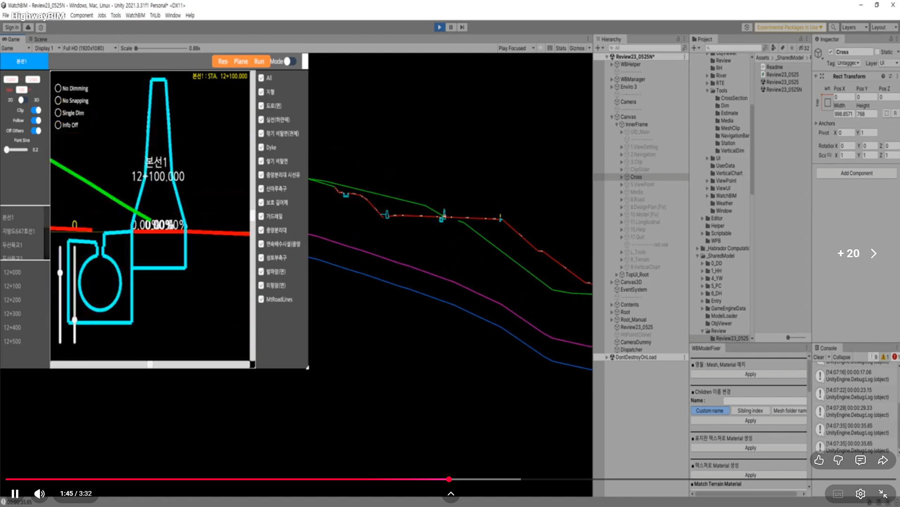
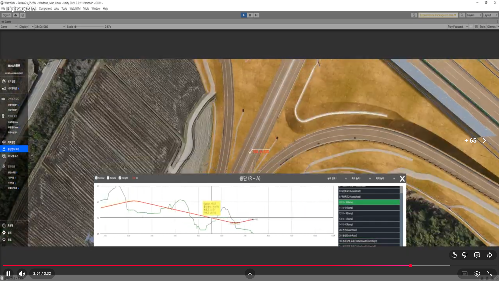

내 역할
BIM 상호작용 엔진, 툴 카메라, 횡단면 생성, 2D 분석 뷰어까지 핵심 런타임 로직 전반을 구현했습니다.
대용량 BIM 모델을 실시간으로 다루기 위해 상호작용 엔진, 커스텀 카메라, 횡단면 생성, 2D 분석 뷰어를 직접 구현한 Unity BIM 런타임입니다. Unity 기능 조합을 넘어서 도메인 알고리즘과 분석 도구를 직접 만든 사례입니다.
대용량 BIM 상호작용과 토목 단면 분석이 함께 필요한 런타임 도구로, 일반 뷰어보다 높은 정확도와 조작성이 필요했습니다.
BIM 상호작용 엔진, 툴 카메라, 횡단면 생성, 2D 분석 뷰어까지 핵심 런타임 로직 전반을 구현했습니다.
대용량 BIM 모델에서 정확한 선택, 안정적인 카메라 제어, 도로·지형 기반 단면 분석이 동시에 필요했습니다.
커스텀 hit engine, cross-section generator, 2D viewer, slope labeling, tool camera를 하나의 BIM 런타임으로 묶었습니다.
단순 뷰어가 아니라 도메인 알고리즘, 상호작용 엔진, 분석 도구를 Unity 런타임 안에 직접 구현한 사례입니다.
종단면 그래프, 횡단면 3D 생성, 2D 단면 뷰어, clipping 비교가 하나의 런타임에서 이어지는 장면을 바로 확인할 수 있도록 시연 영상을 페이지 안에 포함했습니다.
이 프로젝트의 핵심은 BIM 데이터를 Unity 안에서 정확하게 다루는 일이었습니다.
일반적인 카메라 제어나 기본 클릭 판정만으로는 대용량 모델, 절단면, 도로 선형 기반 분석 요구를 감당하기 어려웠습니다.
그래서 상호작용 엔진, 카메라, 절단 계산, 2D 단면 뷰어를 각각 따로 붙이지 않고 하나의 BIM 런타임 도구로 연결했습니다.


WatchBIM에서 가장 강한 축은 횡단면 생성, BIM hit engine, 툴 카메라 시스템입니다.
도로 선형 기준 plane 생성, mesh-plane 교차선 추출, 선분 그룹핑, 3D→2D 단면 변환까지 직접 구현했습니다.
triangle cache, bounds filtering, ray-triangle 판정을 직접 구성해 큰 BIM 씬에서도 필요한 선택과 탐색이 가능하도록 만들었습니다.
pivot 공전, 자기중심 회전, free / ground / flythrough, 단면 focus, orthographic 전환까지 포함한 카메라 시스템을 구현했습니다.
grid, layer toggle, snapping, multi-dimension, hover info까지 붙여서 단면 데이터를 실사용 가능한 도구로 마무리했습니다.
ray intersection, triangle 정리, UV 생성, mesh-plane intersection을 Burst / Job System으로 병렬 처리했습니다.
횡단면 plane과 도로 alignment의 교차를 계산하고 station 값을 보간해 토목 도메인 정보로 연결했습니다.
절토, 성토, 노면별 경사도를 자동 계산하고 1:N, % 형식으로 표시해 분석 결과를 바로 읽을 수 있게 만들었습니다.


WatchBIM은 BIM 데이터를 Unity로 불러와 보여주는 수준을 넘어서, 상호작용 엔진과 분석 도구를 직접 만든 프로젝트였습니다.
특히 횡단면 시스템은 geometry kernel, 도메인 규칙, 2D 뷰어가 모두 이어져 있어서 제품성과 알고리즘이 함께 보이는 축입니다.
포트폴리오 관점에서는 대용량 3D 런타임, BIM 도메인 이해, 툴 개발 역량을 동시에 설명해주는 사례입니다.
Plane Intersection · Station · Slope
Bounds Filter · Triangle Hit
2D Viewer · Dimension · Camera